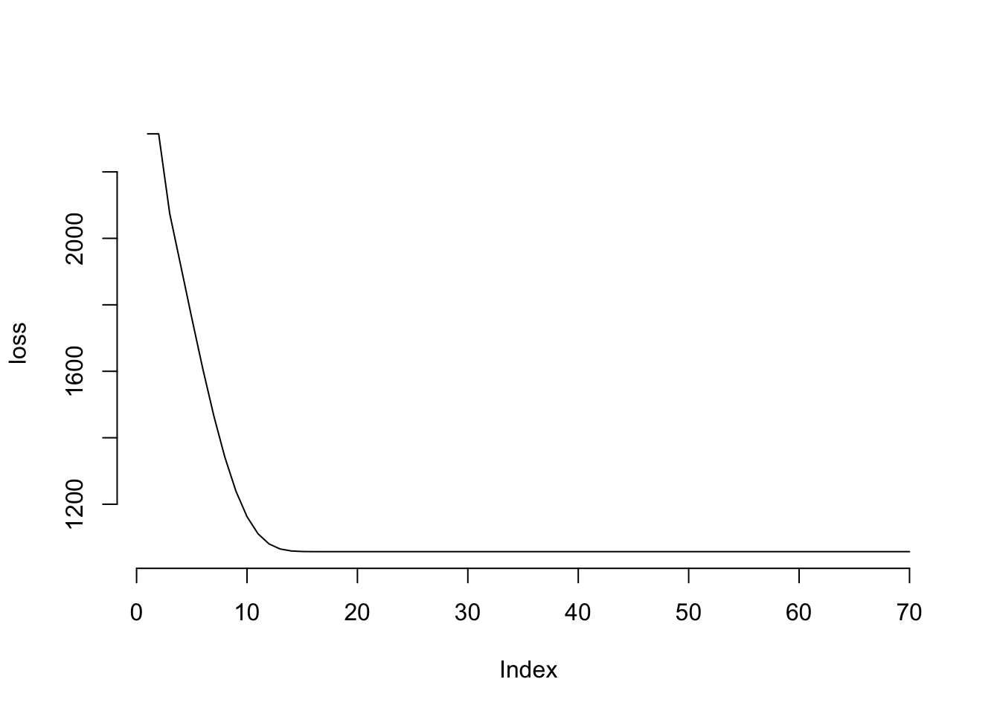

#' # Data Setup
#'
#' Create some basic data for standard regression.
set.seed(8675309)
n = 1000
x1 = rnorm(n)
x2 = rnorm(n)
y = 1 + .5*x1 + .2*x2 + rnorm(n)
X = cbind(Intercept = 1, x1, x2) # model matrix
#' # Gradient Descent Algorithm
gd = function(
par,
X,
y,
tolerance = 1e-3,
maxit = 1000,
stepsize = 1e-3,
adapt = FALSE,
verbose = TRUE,
plotLoss = TRUE
) {
# initialize
beta = par; names(beta) = colnames(X)
loss = crossprod(X %*% beta - y)
tol = 1
iter = 1
while(tol > tolerance && iter < maxit){
LP = X %*% beta
grad = t(X) %*% (LP - y)
betaCurrent = beta - stepsize * grad
tol = max(abs(betaCurrent - beta))
beta = betaCurrent
loss = append(loss, crossprod(LP - y))
iter = iter + 1
if (adapt)
stepsize = ifelse(
loss[iter] < loss[iter - 1],
stepsize * 1.2,
stepsize * .8
)
if (verbose && iter %% 10 == 0)
message(paste('Iteration:', iter))
}
if (plotLoss)
plot(loss, type = 'l', bty = 'n')
list(
par = beta,
loss = loss,
RSE = sqrt(crossprod(LP - y) / (nrow(X) - ncol(X))),
iter = iter,
fitted = LP
)
}
#' ## Run
#'
#' Set starting values.
init = rep(0, 3)
#' For any particular data you'd have to fiddle with the `stepsize`, which could
#' be assessed via cross-validation, or alternatively one can use an
#' adaptive approach, a simple one of which is implemented in this function.
gd_result = gd(
init,
X = X,
y = y,
tolerance = 1e-8,
stepsize = 1e-4,
adapt = TRUE
)Iteration: 10Iteration: 20Iteration: 30Iteration: 40Iteration: 50Iteration: 60Iteration: 70
str(gd_result)List of 5
$ par : num [1:3, 1] 0.985 0.487 0.218
..- attr(*, "dimnames")=List of 2
.. ..$ : chr [1:3] "Intercept" "x1" "x2"
.. ..$ : NULL
$ loss : num [1:70] 2315 2315 2075 1918 1760 ...
$ RSE : num [1, 1] 1.03
$ iter : num 70
$ fitted: num [1:1000, 1] 0.441 1.061 0.43 2.125 1.858 ...#' ## Comparison
#'
#' We can compare to standard linear regression.
rbind(
gd = round(gd_result$par[, 1], 5),
lm = coef(lm(y ~ x1 + x2))
) Intercept x1 x2
gd 0.9847800 0.4867900 0.2175200
lm 0.9847803 0.4867896 0.2175169